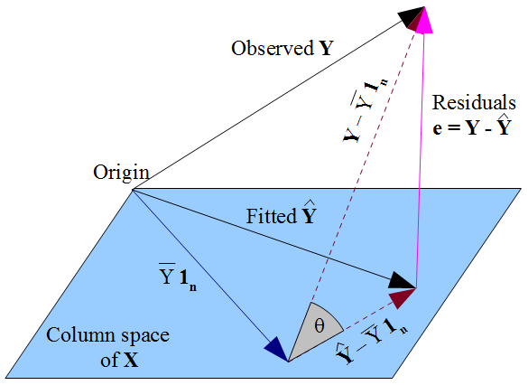

library(fixest)
library(estimatr)The Classical Linear Model
Chapter 1, Quantitative Methods
Before we start with causal inference, we need to understand relationships between variables (correlations). This chapter inroduces the classical linear model, its mechanics, and how we can achieve unbiased estimates of relationships. This chapter discusses the classical linear models, the properties of the ordinary least squares estimator, statistical inference in a regression setting, and model selection.
Use the right sidebar for quick navigation. R-code is provided at the bottom.
The Linear Model
Model Specification
There is some random outcome variable \(Y_i\), and \(p\) explanatory variables \(X_{i1}, X_{i2}, \dots, X_{ip}\). The population linear model is specified as a conditional expectation function:
\[ \E(Y_i|X_i) = \beta_0 + \beta_1 X_{i1} + \dots + \beta_p X_{ip} \]
Where \(\beta_0, \dots, \beta_p\) are population parameters to be estimated. We can also specify linear regression not as the expected \(Y\) as above, but for each observation of \(Y_i\):
\[ Y_i = \beta_0 + \beta_1X_{i1} + \dots + \beta_pX_{ip} + \eps_i \ = \ \beta_0 + \sum\limits_{j=1}^p \beta_jX_{ij} + \eps_i \]
Where \(\eps_i\) is the error term representing the variation in \(Y_i\) that is not explained by the \(p\) explanatory variables: either a missing variable in our model, or some random noise. This model implies for each observation/individual \(i=1,\dots ,n\) in the population, with values \((y_i, x_{i1} \dots, x_{ip})\) has a regression equation:
\[ \begin{align} y_1 = & \ \beta_0 + \beta_1x_{11} + \dots + \beta_px_{1p} + \eps_1 \\ y_2 = & \ \beta_0 + \beta_1x_{21} + \dots + \beta_px_{2p} + \eps_2 \\ & \qquad \vdots \qquad \qquad \vdots \\ y_n = & \ \beta_0 + \beta_1x_{n1} + \dots + \beta_px_{np} + \eps_n \end{align} \]
We can write this system of regression equations in linear algebra form:
\[ y = X\beta + \eps \quad \iff \quad \begin{pmatrix}y_1 \\ y_2 \\ \vdots \\ y_n\end{pmatrix} = \begin{pmatrix}1 & x_{11} & \dots & x_{1p} \\1 & x_{21} & \dots & x_{2p} \\\vdots & \vdots & \vdots & \vdots \\1 & x_{n1} & \dots & x_{np}\end{pmatrix} \begin{pmatrix}\beta_0 \\ \beta_1 \\ \vdots \\ \beta_p\end{pmatrix} + \begin{pmatrix}\eps_1 \\ \eps_2 \\ \vdots \\ \eps_n\end{pmatrix} \]
Our goal is to estimate \(\beta\) to get our estimates \(\hat\beta\), which allows us to create predicted fitted-values model \(\hat y = X\hat\beta\).
Ordinary Least Squares Estimator
To estimate the population parameters \(\beta_0, \dots, \beta_p\), we use our sample data and try to find the values \(\hat\beta_0, \dots, \hat\beta_p\) that minimise the square sum of residuals (SSR): \(\sum(Y_i - \hat Y_i)^2\) .We will define the SSR as function \(S(\hat\beta)\):
\[ \begin{align} S(\hat\beta) & = (y - \hat y)^\top (y - \hat y) && (\Sigma(Y - \hat Y_i)^2 \text{ in linear algebra})\\ & = (y - \color{blue}{X \hat\beta}\color{black} )^\top (y - \color{blue}{X \hat\beta}\color{black}) && (\because \color{blue}{\hat y = X \hat\beta}\color{black})\\ & = y^\top y - \hat\beta^\top X^\top y - y^\top X \hat\beta + \hat\beta^\top X^\top X \hat\beta && (\text{distribute out}) \\ & = y^\top y \ \color{blue}{- 2 \hat\beta^\top X^\top y} \color{black} + \underbrace{\hat\beta^\top X^\top X \hat\beta}_{\text{quadratic}} && (\because \color{blue}{- \hat\beta^\top X^\top y - y^\top X \hat\beta = - 2 \hat\beta^\top X^\top y} \color{black}) \end{align} \]
Now, let us take the gradient to find the first order condition:
\[ \frac{\partial S(\hat\beta)}{\partial \hat\beta} = -2 X^\top y + 2 X^\top X \hat\beta = 0 \]
When assuming \(X^\top X\) is invertable (which is true if \(X\) is full rank), we can isolate \(\hat\beta\) to find the solution to OLS:
\[ \begin{align} -2 X^\top y + 2 X^\top X \hat\beta & = 0 \\ 2 X^\top X \hat\beta & = 2 X^\top y && ( + 2X^\top y \text{ to both sides}) \\ \hat\beta & = (2X^\top X)^{-1} -2 X^\top y && (\times (2X^\top X)^{-1} \text{ to both sides}) \\ \hat\beta & = (X^\top X)^{-1} X^\top y && (2^{-1}, 2 \text{ cancel out}) \end{align} \tag{1}\]
Vector \(\hat\beta\) is our coefficient estimates derived from OLS. With \(\hat\beta\), we can calculate predictions of \(y\) with \(\hat y = X \hat\beta\).
Alternative Derivation for Simple Linear Regression
For simple linear regression (with one explanatory variable), we can use summation notation instead of linear regression. Our SSR in summation form is:
\[ SSR = S(\hat\beta_0, \hat\beta_1)= \sum\limits_{i=1}^n(Y_i - \hat\beta_0 - \hat\beta_1X_i)^2 \]
We want to minimise the SSR in respect to both \(\hat\beta_0\) and \(\hat\beta_1\). We can do this by finding our first order conditions:
\[ \begin{align} \frac{\partial S(\hat\beta_0, \hat\beta_1)}{\partial \hat\beta_0} & = \sum\limits_{i=1}^n(Y_i - \hat\beta_0 - \hat\beta_1X_i) = 0 \\ \frac{\partial S(\hat\beta_0, \hat\beta_1)}{\partial \hat\beta_1} & = \sum\limits_{i=1}^n X_i(Y_i - \hat\beta_0 - \hat\beta_1X_i) = 0 \\ \end{align} \]
These conditions create a system of equations, which you can solve for the OLS solutions of \(\widehat{\beta_0}\) and \(\widehat{\beta_1}\). I will not show it step by step, as it is tedious (and not that important). The OLS solutions are
\[ \begin{align} \hat\beta_0 & = \bar Y - \widehat{\beta_1} \bar X \\ \hat\beta_1 & = \frac{\sum_{i=1}^n(X_i - \bar X)(Y_i - \bar Y)}{\sum_{i=1}^n(X_i - \bar X)^2} = \frac{Cov(X_i, Y_i)}{\V Y_i} \end{align} \]
Proof OLS Estimates are Equal with \(Y_i\) and \(\E(Y_i|X_i)\)
Before, we specified the linear model in terms of both \(Y_i\) and the conditional expectation function \(\E(Y_i|X_i)\). However, I only derived OLS estimates in respect to \(Y_i\). For those interested, this is proof the OLS estimates of both are equivalent.
Best-approximation of a conditional expectation function is defined by the lowest mean-squared error (MSE). Let us prove OLS on \(Y_i\) gets the same \(\beta_0, \dots, \beta_p\) as the best linear approximation of \(\E(Y_i|X_i)\). Take this very simple CEF and its MSE:
\[ \begin{align} \E(Y_i|X_i) & = b_0 + b_1X_i \\ MSE & = \E(Y_i - \E(Y_i|X_i))^2 \\ & = \E(Y_i - (\color{blue}{b_0 + b_1X_i}\color{black}))^2 && (\because \color{blue}{\E(Y_i|X_i) = b_0 + b_1X_i}\color{black})\\ & = \E(Y_i - b_0 - b_1 X_i) && \text{(distribute negative sign)} \end{align} \]
The first order conditions are (using chain rule and partial derivatives):
\[ \begin{split} & \E(Y_i - b_0 - b_1X_i) = 0 \\ & \E(X_i(Y_i - b_0 - b_1X_i) = 0 \end{split} \]
Now, recall our OLS minimisation conditions (simple linear regression, presented in the extra info box above). Since by definition, average/expectation is \(\E(x) = \frac{1}{n} \sum x_i\), we can rewrite as:
\[ \begin{split} & \sum\limits_{i=1}^n (Y_i - \hat{\beta}_0 - \hat{\beta}_1 X_i) = \ n \times \E(Y_i - \hat\beta_0 - \hat\beta_1X_i) = 0 \\ & \sum\limits_{i=1}^n X_i (Y_i - \hat{\beta}_0 - \hat{\beta}_1 X_i) = \ n \times \E(X_i(Y_i - \hat\beta_0 - \hat\beta_1X_i)) = 0 \end{split} \]
And since anything multiplied to a zero turns into zero, we can ignore the \(n\) in the first order condition. Thus, we can see, are the exact same minimisation conditions as the conditional expectation function.
Orthogonal Projection of OLS
We can use the OLS solution from Equation 1 to get our fitted values \(\hat{y}\) and residuals \(\hat\eps\):
\[ \begin{align} \hat y & = X\hat\beta = X \color{blue}{(X^\top X)^{-1}X^\top y} && \color{black}(\because \color{blue}{\hat\beta = (X^\top X)^{-1}X^\top y} \color{black}) \\ & = \color{red}{P}\color{black}y && (\because \color{red}{P:= X(X^\top X)^{-1}X^\top}) \\ \hat\eps & = y - \hat y = y - \color{blue}{Py} && \color{black}( \because \color{blue}{\hat y = Py}\color{black}) \\ & = (I-P)y && (\text{factor out y}) \\ & = \color{purple}{M}\color{black}y && (\because \color{purple}{M:= I - P}\color{black}) \end{align} \]
Matrix \(\color{red}{P}\), called the projection matrix, is a matrix operator that performs the linear mapping \(y \rightarrow \hat{ y}\). Matrix \(\color{purple}{M}\), called the residual maker, is a matrix operator that performs the linear mapping \(y \rightarrow \hat{\eps}\).
Fitted values \(\hat{y}\) are a linear combination of our explanatory variables. That implies our explanatory variable vectors \(x_1, x_2, \dots, x_p\) span a vector space that includes our fitted values vector \(\hat{y}\). Thus, what \(\color{red}{ P}\) is doing is taking our original vector \(y\), and projecting it into the space spanned by our \(X\) (called the column space). In the figure below, our observed \(y\) vector is being projected onto the blue plane spanned by \(X\) to create our \(\hat{y}\).

Residual maker \(\color{purple}{M}\) projects \(y\) onto the space orthogonal to the column space of \(X\) to get our residuals \(\hat{\eps}\). We can see in the figure the residuals vector (notated \(\mathbf e\) in the figure) is orthogonal/perpendicular to the space of \(\mathbf X\).
Matrix Properties of \(P\) and \(M\)
Both \(\color{red}{P}\) and \(\color{purple}{M}\) are symmetric matrices: \(P^\top = P, \ M^\top = M\). They are also both idempotent matrices: \(PP = P, \ MM = M\). We can prove this second statement using the first (I will only do it for \(P\), but the same applies for \(M\):
\[ \begin{align} PP & = X(X^\top X)^{-1} \underbrace{X^\top X(X^\top X)^{-1}}_{= I} X^\top \\ & = X(X^\top X)^{-1} X^\top = P \end{align} \]
\(\color{red}{ P}\) and \(\color{purple}{ M}\) are also orthogonal to each other - i.e. \(P^\top M = 0\):
\[ \begin{align} P^\top M & = \color{blue}{P}\color{black}M && (\because \color{blue}{P^\top = P}\color{black}) \\ & = P(\color{blue}{I-P}\color{black}) && (\because \color{blue}{M:= I - P}\color{black}) \\ & = P - PP && \text{(distribute out)} \\ & = P - \color{blue}{P} && \color{black}(\because \color{blue}{PP = P}\color{black}) \\ & = 0 \end{align} \]
Interpreting the Model
Regression Anatomy and Controlling
We can split up matrix \(X\) into two matrices - \(X_1\) containing the regressors we care about, and \(X_2\) containing regressors we do not care about. Vector \(\beta\) will be split in the same way. Our partitioned model is:
\[ y = X_1 \beta_1 + X_2 \beta_2 + \eps \]
Recall “residual maker” matrix \(M\). First, note a unique property: \(\color{red}{MX = 0}\). Now, let us define the residual making matrix for the second part of the regression \(M_2\):
\[ M_2 = I - X_2 (X_2^\top X_2)^{-1}X_2^\top \]
Now, let us multiply both sides of our above partitioned model by \(M_2\):
\[ \begin{align} M_2 y & = M2(X_1\beta_1 + X_2\beta_2 + \eps) \\ M_2 y & = M_2X_1 \beta_1 + M_2 X_2 \beta_2 + M_2 \eps && \text{(multiply out)} \\ M_2 y & = M_2 X_1 \beta_1 + M_2 \eps && (\because M_2X_2 = 0, \ \because \color{red}{MX = 0}\color{black}) \end{align} \]
Now, let us define \(\tilde{y} := M_2 y\), \(\tilde{X}_1: = M_2 X_1\), and error \(\tilde\eps := M_2 \eps\). Then we get the following regression equation and OLS coefficient estimates:
\[ \tilde y = \tilde X_1 \beta_1 + \tilde\eps \]
\[ \hat\beta_1 = (\tilde X_1^\top \tilde X_1)^{-1}\tilde X_1 ^\top \tilde y \]
Remember that vector \(\hat{\beta}_1\) is our coefficient estimates for \(X_1\), the portion of \(X\) we are interested in. This is equivalent to the coefficient estimates had we not partitioned the model.
Notice how in the formula, we have \(\tilde{X}_1 := M_2 X_1\). We know that \(M_2 X_2 = 0\). That tells us that any part of \(X_1\) that was correlated to \(X_2\) also became 0. Thus, \(\tilde{X}_1\) is the part of \(X_1\) that is uncorrelated with \(X_2\). Essentially, we are partialling out the effect of other variables. This is why we can “control” for other variables when conducting multiple regression.
Interpretation of Coefficients
Above, we showed OLS coefficients partial out (control) for the other control variables in the regression. Here, we formalise the interpretations. I define \(\hat\beta_j \in \{\hat\beta_1, \dots, \hat\beta_p\}\), multiplied to \(X_{ij} \in \{X_{i1}, \dots, X_{ip}\}\). \(\hat\beta_0\) is the intercept.
I assume here that \(Y_i\) is continuous. For interpretations for non-linear \(Y_i\), see the linear probability model section below. For categorical \(X_{ij}\), see the categorical explanatory variables section.
| Continuous \(X_{ij}\) | Binary \(X_{ij}\) | |
| \(\hat\beta_j\) | For every one unit increase in \(X_{ij}\), there is an expected \(\hat\beta_j\) unit change in \(Y_i\), holding all other explanatory variables constant. | There is a \(\hat\beta_j\) unit difference in \(Y_i\) between category \(X_{ij} = 1\) and category \(X_{ij} = 0\), holding all other explanatory variables constant. |
| \(\hat\beta_0\) | When all explanatory variables equal 0, the expected value of \(Y_i\) is \(\hat\beta_0\). | For category \(X_{ij} = 0\), the expected value of \(Y_i\) is \(\hat\beta_0\) (when all other explanatory variables equal 0). |
Note: these interpretations are not causal effects, just correlations. We also have not discussed if the actual estimates of \(\hat\beta_j\) are reliable (which will be covered in the classical least squares theory below).
Standardised Interpretations
Sometimes, unit change is not very useful - as it depends on how the variable is measured. For example, what does a 5 unit change in democracy mean? Is that big, small? It is hard to tell.
Instead, we can look at the change in standard deviations. For a one standard deviation \(\sigma_X\) increase in \(X_{ij}\), there is an expected \(\frac{\beta_j\sigma_X}{\sigma_Y}\)-standard deviation change in \(Y_i\). The proof is provided below.
Proof: For simplicity, let us use a simple linear regression \(\E(Y_i|X_i) = \beta_0 + \beta_1 X_i\):
\[ \begin{align} & \E \left(\frac{Y_i}{\sigma_Y} | X_i = x + \sigma_X \right ) - \E \left(\frac{Y_i}{\sigma_Y} | X_i = x \right ) \\ & = \frac{\E(Y_i|X_i = x+ \sigma_X)}{\sigma_Y} - \frac{\E(Y_i|X_i = x)}{\sigma_Y} &&\text{(property of expectation)} \\ & = \frac{\E(Y_i|X_i = x+ \sigma_X) - \E(Y_i|X_i = x)}{\sigma_Y} && \text{(combine into 1 fraction)}\\ & = \frac{\beta_0 + \beta_1(x+\sigma_X) - [\beta_0 + \beta_1(x)]}{\sigma_Y} && \text{(plug in regression models)}\\ & = \frac{\beta_1\sigma_X}{\sigma_Y} && \text{(cancel and simplify)} \end{align} \]
Goodness of Fit with R-Squared
Recall our fitted values equation, shown previously, can be rewritten with the projection matrix \(P\):
\[ \begin{align} \hat y = X(X^\top X)^{-1} X^\top y \ = \ \color{blue}{P}\color{black}y && (\because \color{blue}{P := X(X^\top X)^{-1} X^\top}) \end{align} \]
We are interested in is how well our model \(Py\) explains the actual \(y\). The scalar product \(y^\top Py\) describes the shadow the actual \(y\) casts on our projected model. We can divide it by \(y^\top y\), which is the “maximum” shadow possible (perfect shadow) to create a value between 0 and 1. This ratio is \(R^2\).
\[ R^2 = \frac{y^\top Py}{y^\top y} \]
The total amount of variation in \(y\) is called the total sum of squares (SST). The part of \(y\) we cannot explain is the SSR that we minimised for OLS esimtation. That implies that the remaining part SST-SSR is the variation in \(y\) that our model explains, called the sum of explained squares (SSE). \(R^2\) can be though of the ratio of explained variation in \(y\) by our model to the total variation in \(y\):
\[ R^2 = \frac{SSE}{SST} = \frac{SST - SSR}{SST} = 1 - \frac{SSR}{SST} = 1 - \frac{\sum (Y_i - \hat Y_i)^2}{\sum(Y_i - \bar Y)^2} \]
R-Squared (\(R^2\)) measures the proportion of variation in \(y\) that is explained by our explanatory variables. R-Squared is always between 0 and 1 (0%-100%). Higher values indicate our model better explains the variation in \(y\).
Classical Least Squares Theory
The Classical Assumptions
1) Linearity in Parameters. This means that the linear model must be able to be written in the form \(y = X\beta + \eps\). This does not mean the best-fit line must be linear (as we will explore later).
2) Independent and Identically Distributed (i.i.d.). Essentially, this means any two observations \(i\) and \(j\) are sampled from the same random variable distribution with the same probabilities.
3) No Perfect Multicolinearity. This means that no explanatory variables \(X_{i1}, \dots, X_{ip}\) can be written as an exact linear combination of other explanatory variables in the model. This is needed for the OLS formula.
4) Zero Conditional Mean \(\E(\eps|X) = 0\). This can be broken down into two parts. First, \(\E(\eps) = 0\): This is always met since if it is not 0, you can adjust \(\beta_0\) until it is 0. More importantly, the assumption of exogeneity \(\E(X^\top \eps) = 0\). This means that all regressors \(X_{ij}\), and any combination of regressors, should be uncorrelated with the error term \(\eps\).
5) Spherical Errors. This is an assumption made on the variance-covariance matrix of the error terms \(\eps_i\):
\[ \underbrace{\V(\eps|X)}_{\mathrm{cov. \ matrix}} = \begin{pmatrix} \V\eps_1 & cov(\eps_1, \eps_2) & cov(\eps_1, \eps_3) & \dots \\ cov(\eps_2, \eps_1) & \V\eps_2 & cov(\eps_2, \eps_3) & \dots \\ cov(\eps_3, \eps_1) & cov(\eps_3, \eps_2) & \V\eps_3 & \vdots \\ \vdots & \vdots & \dots & \ddots \end{pmatrix} = \sigma^2 I_n = \begin{pmatrix} \sigma^2 & 0 & \dots & 0 \\ 0 & \sigma^2 & \dots & 0 \\ \vdots & \vdots & \ddots & 0 \\ 0 & 0 & \dots & \sigma^2 \end{pmatrix} \tag{2}\]
This assumption can also be broken into two parts. No Autocorrelation is the assumption that all error terms are uncorrelated \(cov(\eps_i, \eps_j) = 0\), and is directly a result of the earlier i.d.d. assumption. The second part is Homoscedasticity, which says that all the variances of each error term \(\V(\eps_i)\) is constant at some value \(\sigma^2\), which implies \(X\) has no impact on the variance of \(\eps_i\).
If homoscedasticity is violated but ‘no autocorrleation’ is still met, we have heteroscedasticity. We will discuss heteroscedasticity later below, and we will not worry too much about autocorrelation here.
Visualising Homoscedasticity
An easy way to identify homoscedasticity is to look at a residual plot (just the plot of all \(\hat\eps_i\)):

Notice how the homoscedasticity residuals seem to have the same up-down variance, no matter the value of \(X_i\).
The heteroscedasticity (when homoscedasticity is violated) residuals have a clear pattern - the up-down variance is smaller when \(X_i\) is smaller, and the up-down variance is larger when \(X_i\) is larger. Essentially, if you see a pattern in the residual plot, it is likely heteroscedasticity.
Unbiasedness of OLS
OLS is an unbiased estimator of the relationship between any \(X_{ij}\) and \(Y_i\) under the first 4 classical assumptions: linearity, i.i.d., no perfect multicollinearity, and zero-conditional mean.
Let us prove OLS is unbiased - i.e. \(\E\hat\beta = \beta\) under the 4 classical assumptions. Let us manipulate our OLS solution:
\[ \begin{align} \hat\beta & = (X^\top X)^{-1} X^\top y \\ & = (X^\top X)^{-1} X^\top(\color{blue}{X\beta + \eps}\color{black}) && (\because \color{blue}{y = X\beta + \eps}\color{black}) \\ & = \underbrace{(X^\top X)^{-1} X^\top X}_{= \ I}\beta + (X^\top X)^{-1}X^\top \eps && \text{(multiply out)} \\ & = \beta + (X^\top X)^{-1}X^\top \eps \end{align} \tag{3}\]
Now, let us take the expectation of \(\hat\beta\) conditional on \(X\). Remember condition 4, \(\E(\eps | X) = 0\):
\[ \E(\hat\beta | X) = \beta + (X^\top X)^{-1} \underbrace{\E(\eps | X)}_{= \ 0} \ = \ \beta \]
Now, we can use the law of iterated expectations (LIE) to conclude this proof:
\[ \begin{align} \E \hat\beta & = \E(\E(\hat\beta|X)) && (\because \mathrm{LIE}) \\ & = \E(\color{blue}{\beta}\color{black}) && (\because \color{blue}{\E(\hat\beta | X = \beta)}\color{black}) \\ & = \beta && \text{(expectation of a constant)} \end{align} \]
Thus, OLS is unbiased under the 4 conditions above. This is extremely desirable, as in causal inference (which is a major goal in the social sciences), we will want unbiased estimators that can accurately find the causal effects of one variable on another. In fact, most of the methods we cover in later chapters will be about trying to satisfy these conditions.
Variance of the OLS Estimator
We want to find the variance of our estimator’s sampling distribution, \(\V(\hat\beta | X)\), under all 5 of the classical assumptions. First, let us start off where we left off in Equation 3:
\[ \begin{align} & \hat\beta = \beta + (X^\top X)^{-1} X^\top \eps \\ & \V(\hat\beta | X) = \V(\beta + (X^\top X)^{-1} X^\top \eps) \end{align} \]
Lemma: Property of Variance
Lemma: If \(\eps\) is an \(n\) dimensional vector of random variables, \(c\) is an \(m\) dimensional vector, and \(B\) is an \(n \times m\) dimensional matrix with fixed constants, then the following is true (I will not prove this lemma here, but it is provable):
\[ \V(c + B\eps) = B \V(\eps) B^\top \tag{4}\]
\(\beta\) is a vector of fixed constants. \((X^\top X)^{-1} X^\top \eps\) can be imagined as a matrix of fixed constants, since we are conditioning the variance on \(X\) (so for each \(X\), it is fixed). With the Lemma above:
\[ \begin{align} \V (\hat\beta | X) & = (X^\top X)^{-1}X^\top \V(\eps|X) [(X^\top X)^{-1}X^\top]^{-1} && \text{(lemma)} \\ & = (X^\top X)^{-1}X^\top \V(\eps|X) \color{blue}{X(X^\top X)^{-1}} && \color{black}(\because \color{blue}{[(X^\top X)^{-1}X^\top]^{-1} = X(X^\top X)^{-1}} \color{black}) \end{align} \tag{5}\]
Now, assuming spherical errors in Equation 2, we can conclude the derivation.
\[ \begin{align} \V (\hat\beta | X) & = (X^\top X)^{-1}X^\top \color{blue}{\sigma^2I_n}\color{black}{X} (X^\top X)^{-1} && (\because \color{blue}{\V(\eps|X) = \sigma^2 I_n}\color{black}) \\ & = \color{blue}{\sigma^2}\color{black}{\underbrace{(X^\top X)^{-1}X^\top X}_{= \ I}(X^\top X)^{-1}} && \text{(rearrange and simplify)} \\ & = \sigma^2 (X^\top X)^{-1} \end{align} \]
This is the variance of the sampling distribution of \(\hat\beta\). We will use this for the Gauss-Markov theorem (below), and also statistical inference later.
Gauss-Markov Theorem
The Gauss-Markov Theorem states that if all 5 classical assumptions are met, the OLS estimator is the best linear unbiased estimator (BLUE) - the unbiased linear estimator with the lowest variance. Any linear estimator takes the form \(\tilde{\beta} = Cy\), including OLS. For any linear estimator \(\tilde{\beta} = Cy\) to be unbiased, we need to assume \(\color{red}{CX = I}\).
Proof \(CX = I\) For a Unbiased Linear Estimator
For any linear estimator \(\tilde{\beta} = Cy\) to be unbiased, we need to assume \(\color{red}{CX = I}\). The proof of this is as follows:
\[ \begin{align} \tilde\beta = C & (\color{blue}{C\beta + \eps}\color{black}) && (\because \color{blue}{y = X\beta + \eps}\color{black}) \\ = C & X\beta + C\eps && \text{(multiply out)} \\ \E(\tilde\beta | X) & = \E(C X\beta + C\eps) \\ & = CX\beta + C \underbrace{\E(\eps | X)}_{= \ 0} && \text{(take constants out of exp.)} \\ & = CX\beta \\ & = \color{red}{I}\color{black}\beta = \beta && (\because \color{red}{CX = I}\color{black}) \\ \E \tilde\beta & = \E( \E(\tilde\beta|X)) && \text{(law of iterated expect.)} \\ & = \E(\color{blue}{\beta}\color{black}) && (\because \color{blue}{\E(\tilde\beta|X) = \beta}\color{black}) \\ & = \beta && \text{(expect. of a constant)} \end{align} \]
Thus, we have shown \(\color{red}{CX = I}\) is a necessary condition for any linear estimator \(\tilde{\beta} = Cy\) to be unbiased.
Now, let us calculate the variance of \(\tilde{\beta}\), taking into consideration the lemma (Equation 4) used in the OLS variance:
\[ \begin{align} \V(\tilde\beta | X) & = \V(Cy|X) \\ & = \V(C(\color{blue}{X\beta + \eps}\color{black})|X) && (\because \color{blue}{y = X\beta + \eps}\color{black}) \\ & = \V(\underbrace{CX}_{= I}\beta + C\eps | X) && \text{(multiply out)} \\ & = \V(\beta + C\eps | X) \\ & = C \V(\eps | X) C^\top && \text{(using lemma)} \\ & = C \color{blue}{\sigma^2 I_n} \color{black} C^\top && (\mathrm{homoscedasticity} \ \color{blue}{\V(\eps|X) = \sigma^2 I_n}\color{black}) \\ & = \sigma^2 CC^\top && \text{(rearrange and simplify)} \end{align} \]
Now, we want to show that the variance of the OLS estimator \(\hat{\beta}\) (under homoscedasticity) is smaller than any linear estimator \(\tilde{\beta}\). Let us find the difference between the variances of estimator \(\tilde{\beta}\) and \(\hat{\beta}\). Note: since \(\color{red}{CX = I}\), the following is also true: \(\color{red}{ X^\top C^\top = (CX)^\top = I}\).
\[ \begin{align} \V(\tilde\beta | X) - \V(\hat\beta|X) & = \sigma^2 CC^\top - \sigma^2 (X^\top X)^{-1} \\ & = \sigma^2(CC^\top - (X^\top X)^{-1}) && (\text{factor out }\sigma^2) \\ & = \sigma^2(CC^\top - \color{red}{CX}\color{black}(X^\top X)^{-1} \color{red}{X^\top C^\top}\color{black}) && (\because \color{red}{X^\top C^\top = CX = I}\color{black}) \\ & = \sigma^2 C(I - X(X^\top X)^{-1} X^\top) C^\top && (\text{factor out }C, C^\top) \\ & = \sigma^2 C \color{blue}{M}\color{black}C^\top && (\text{residual maker matrix } \color{blue}{M}\color{black}) \end{align} \]
Since \(\sigma^2 CM C^\top\) is positive semi-definite (I will not prove this, but it is provable with the properties of \(M\) introduced earlier), we know that \(V(\tilde{\beta}| X) > V(\hat{\beta}| X)\). Thus, OLS is BLUE under the Gauss-Markov Theorem.
Asymptotic Consistency of OLS
We know OLS is unbiased under the first 4 classical assumptions: linearity, i.i.d., no perfect multicollinearity, and zero-conditional mean. OLS is also an asymptotically consistent estimator of \(\beta_j\) under the first 3 classical assumptions, and one weakened version of the zero-conditional mean.
For asymptotic consistency, we replace zero-conditional mean with zero-mean and exogeneity: \(\E(\eps_i) = 0\), and \(Cov(x_i, \eps_i) = 0\), which implies \(E(X_i \eps_i) = 0\). This means that no regressor should be correlated with \(\eps\). This is weaker than Zero-Conditional mean, since it means a function of regressors can be correlated with \(\eps_i\).
Lemma: Vector Notation
The following statements are true (with \(x_i\) being a vector and \(\eps_i\) being a scalar):
\[ \begin{split} & X^\top X = \sum\limits_{i=1}^n x_i x_i^\top\\ & X^\top \mathbf \eps = \sum\limits_{i=1}^n x_i \eps_i \end{split} \]
Let us start of where we left of from Equation 3. Using vector notation, we can simplify:
\[ \begin{align} \hat\beta & = \beta + (X^\top X)^{-1} X^\top \eps \\ & = \beta \left( \sum\limits_{i=1}^n x_i x_i^\top \right)^{-1} \left( \sum\limits_{i=1}^n x_i \eps_i \right) && \text{(vector notation)} \\ & = \beta + \left( \frac{1}{n}\sum\limits_{i=1}^n x_i x_i^\top \right)^{-1} \left( \frac{1}{n} \sum\limits_{i=1}^n x_i \eps_i \right) && (\left(\frac{1}{n}\right)^{-1}, \frac{1}{n} \text{ cancel out}) \end{align} \]
Now, we apply probability limits to both sides, and then use the law of large numbers and zero-conditional mean and exogeniety condition to simplify:
\[ \begin{align} \mathrm{plim}\hat\beta & = \beta + \left( \mathrm{plim} \frac{1}{n}\sum\limits_{i=1}^n x_i x_i^\top \right)^{-1} \left( \mathrm{plim}\frac{1}{n} \sum\limits_{i=1}^n x_i \eps_i \right) \\ & = \beta + (\E(x_i x_i^\top))^{-1} \underbrace{\E(x_i \eps_i)}_{= 0} = \beta && \text{(law of large numbers)} \end{align} \]
Thus, OLS is asymptotically consistent under the 4 conditions above. Note that it is possible for OLS to be consistent but biased (if we only meet the weakened zero-mean and exogeneity condition, and not the full zero-conditional mean condition). However, asymptotic consistency is still valuable if we have large sample sizes.
Robust Standard Errors
So far, we have assumed that the classical assumptions are met. However, this is often not the case, especially with the final assumption: spherical errors (homoscedasticity + no autocorrelation).
Heteroscedasticity is when homoscedasticity is violated - which implies each \(i\) (based on its \(X\) values) has its own error: \(\V(\eps_i|X) = \sigma_i^2\). We still assume no autocorrelation.
\[ \V(\eps| X) = \Omega = \begin{pmatrix} \sigma^2_1 & 0 & \dots & 0 \\ 0 & \sigma^2_2 & \dots & 0 \\ \vdots & \vdots & \ddots & 0 \\ 0 & 0 & \dots & \sigma^2_n \end{pmatrix} \]
What are the implications of heteroscedasticity? First, heteroscedasticity does not bias OLS, as the unbiasedness proof only relies on the first 4 classical assumptions. Second, heteroscedasticity means OLS is no longer BLUE - i.e. there exists are more efficient unbiased linear estimator (the generalised least squares estimator, which we will not cover since it is rarely used).
Third, and most relevant to us, is that the OLS variance formula (and standard errors) are no longer valid. Instead, we have to use the Huber-White Standard Errors (also called robust standard errors). This is because if we recall from Equation 5, we originally simplified this equation using the homoscedasticity assumption. Instead, for robust standard errors, we start from Equation 5, and plug in our error covariance matrix \(\Omega\) from above:
\[ \V(\hat{\beta}| X) = (X^\top X)^{-1} X^\top \color{blue}{\begin{pmatrix} \sigma^2_1 & 0 & \dots & 0 \\ 0 & \sigma^2_2 & \dots & 0 \\ \vdots & \vdots & \ddots & 0 \\ 0 & 0 & \dots & \sigma^2_n \end{pmatrix}}\color{black} X ( X^\top X)^{-1} \]
The other assumption of spherical errors, autocorrelation, is a common problem in time-series and data that has spatial elements, and just like heteroscedasticity, this means that OLS is no longer BLUE (the generalised least squares will be BLUE), and that we will need special autocorrelation + heteroscedasticity (HAC) robust standard errors.
Statistical Inference
Normality and Standard Errors
We need to know the form of the \(\hat\beta\) sampling distribution for statistical tests. If our sample size is sufficiently large, we can invoke the central limit theorem, which says that the sampling distribution of \(\hat\beta\) is approximately normal if our sample size \(n\) is large enough.
Or, we can impose a condition of normality of the error terms: \(\eps | X \sim \mathcal N(0, \sigma^2 I)\). This will ensure the sampling distribution of \(\hat\beta\) is normally distributed. (Note, the mean 0 and variance \(\sigma^2 I\) come from the classical assumptions of zero-conditional mean and spherical errors). However, this condition is very restrictive, so we typically rely on the reliable central limit theorem.
Now, we will need the standard error of the sampling distribution. We know the standard error is the square root of the variance of the sampling distribution, which we derived (assuming the classical assumptions are met) as:
\[ \V(\hat\beta | X) = \sigma^2 (X^\top X)^{-1} \]
We do not know the value of \(\sigma^2\) as it is a population parameter. So, we estimate it with an unbiased estimator \(s^2\):
\[ \sigma^2 \approx s^2 = \frac{\hat{\eps}^\top \hat{\eps}}{n-k-1} \]
While this estimator is unbiased, the estimator \(s^2\) has variance. The implication of this is that we can no longer use the standard normal distribution for our sampling distribution, and instead, use the t-distribution, which has fatter tails and a lower peak to account for this variance in \(s^2\).
If we believe heteroscedasticity is violated (which we assume by default), we should use the heteroscedasticity variance of OLS:
\[ \V(\hat{\beta}| X) = (X^\top X)^{-1} X^\top \Omega\color{black} X ( X^\top X)^{-1} \]
The \(\sigma^2_i\) in the \(\Omega\) matrix can be estimated with \(s_i^2 = \hat\eps_i^2\). The robust standard errors can be derived by taking the square root. We typically use robust-standard errors in causal inference by default, unless we can prove homoscedasticity.
Hypothesis Testing
With our (robust) standard errors, we can run hypothesis tests on our coefficients to see if we have a relationship between two variables \(X_{ij}\) and \(Y_i\). Our typical hypotheses are:
- \(H_0 : \beta_j = 0\) (i.e. there is no relationship between \(X_{ij}\) and \(Y_i\)).
- \(H_1:\beta_j ≠ 0\) (i.e. there is a relationship between \(X_{ij}\) and \(Y_i\)).
First, we calculate the t-test statistic, where \(H_0\) is the value set in the null hypothesis (typically 0):
\[ t = \frac{\hat\beta_j - H_0}{\widehat{se}(\hat\beta_j)} \]
Now, we consult a t-distribution of \(n-k-1\) degrees of freedom. We find points \(t\) and \(-t\) on our t-distribution, and highlight the areas under the curve further away from the 0 at these two points. In the figure below, \(t = 2.228\):

The area highlighted, divided by the entire area under the curve, is the p-value. The p-value we get is the probability of getting a test statistic equally or more extreme than the one we got, given the null hypothesis is true.
- If \(p<0.05\), we believe the probability of a null hypothesis is low enough, such that we reject the null hypothesis (that there is no relationship between \(X_{ij}\) and \(Y_i\)), and conclude our alternate hypothesis (that there is a relationship between \(X_{ij}\) and \(Y_i\)).
- If \(p > 0.05\), we cannot reject the null hypothesis, and cannot reject there is no relationship between \(X_{ij}\) and \(Y_i\).
Confidence Intervals
The 95% confidence intervals of coefficients have the following bounds:
\[ (\hat\beta_j - 1.96 \widehat{se}(\hat\beta_j), \ \ \hat\beta_j + 1.96 \widehat{se}(\hat\beta_j)) \]
- The 1.96 is an approximation assuming a normal distribution. The actual confidence intervals (calculated by computers) will use a t-distribution of \(n-k-1\), which will result in a slightly different multiplicative factor.
The confidence interval means that under repeated sampling and estimating \(\hat\beta_j\), 95% of the confidence intervals that we construct will include the true \(\beta_j\) value in the population.
If the confidence interval contains 0, we cannot conclude a relationship between \(X_{ij}\) and \(Y_i\), as 0 is a plausible value of \(\beta_j\). These results will always match those of the t-test.
F-Tests
F-tests are used to test more than one coefficient at a time. For example, you might want to test if two variables or coefficients are jointly significant. The utility of this will become more clear when we talk about categorical explanatory variables and polynomial transformations. Our hypotheses in a F-test will be:
- \(M_0 : Y_i = \beta_0 + \sum\limits_{j=1}^g \beta_{j} X_{ij} + \eps_i\) (the smaller null model with \(g\) variables).
- \(M_a : Y_i = \beta_0 + \sum\limits_{j=1}^g \beta_{j} X_{ij} + \sum\limits_{j=g+1}^p \beta_{j} X_{ij} + \eps_i\) (the bigger model with the original \(g\) variables + additional variables up to \(p\)).
F-tests compare the R-squared of the two models through the F-statistic:
\[ F = \frac{(SSR_0 - SSR_a) / (k_a - k_0)}{SSR_a /(n - k_a - 1)} \]
We then consult a F-distribution with \(k_a - k_0\) and \(n-k_a - 1\) degrees of freedom, obtaining a p-value (in the same way as the t-test). The p-value we get is the probability of getting a test statistic equally or more extreme than the one we got, given the null hypothesis is true.
- If \(p<0.05\), the we believe the probability of the null hypothesis is low enough, such that we reject the null hypothesis (that \(M_0\) is the better model), and conclude our alternate hypothesis (that \(M_a\) is a better model). This also means the extra coefficients in \(M_a\) are jointly statistically significant.
- If \(p > 0.05\), we cannot reject the null hypothesis, and cannot reject that \(M_0\) is a better model. Thus, the extra coefficients in \(M_a\) are jointly not statistically significant.
Model Specification Issues
Omitted Variable Bias
Suppose there is some variable \(Z_i\) that we have not included in a “short” regression. The actual, “true” regression of the population, would include this confounder \(Z_i\)
\[ \underbrace{y = X\beta + \eps}_{\text{short regression}} \qquad \underbrace{y = X\beta + z\delta + \eps}_{\text{true regression with z} } \]
We can find the expected value of the OLS estimate of the “short regression” excluding confounder \(Z_i\):
\[ \begin{align} \hat\beta & = (X^\top X)^{-1}X^\top y \\ & = (X^\top X)^{-1}X^\top(\color{blue}{X\beta + z\delta + \eps}\color{black}) && (\because \color{blue}{y = X\beta + z\delta + \eps}\color{black}) \\ & = \underbrace{(X^\top X)^{-1}X^\top X}_{= \ I}\beta + (X^\top X)^{-1}X^\top z\delta + (X^\top X)^{-1} X^\top \eps && \text{(multiply out)} \\ & = \beta + (X^\top X)^{-1}X^\top z\delta + (X^\top X)^{-1} X^\top \eps \\ \end{align} \]
\[ \begin{align} \E(\hat\beta | X, z) & = \beta + (X^\top X)^{-1}X^\top z \delta + (X^\top X)^{-1} X^\top \underbrace{\E(\eps | X, z)}_{= 0} \\ & = \beta + (X^\top X)^{-1}X^\top z \delta \end{align} \]
Now, imagine a regression of outcome variable being the confounder \(z\), on the explanatory variables \(X\), such that \(z = X\eta + u\). Our OLS estimate would of \(\eta\) would be \(\hat\eta = (X^\top X)^{-1} X^\top z\). Now, we can plug \(\hat\eta\) into our expected value of \(\hat\beta\). Assume our estimator \(\hat{\eta}\) is unbiased:
\[ \begin{align} \E(\hat\beta | X, z) & = \beta + (X^\top X)^{-1}X^\top z \delta\\ & = \beta + \color{blue}{\hat\eta}\color{black}\delta && (\because \color{blue}{\hat\eta = (X^\top X)^{-1} X^\top z }\color{black}) \\ \E\hat\beta & = \E(\E(\hat\beta|X, z)) && \text{(law of iterated expect.)} \\ & = E(\color{blue}{\beta + \hat\eta \delta}\color{black}) && (\because \color{blue}{\E(\hat\beta|X, z) = \beta + \hat\eta\delta} \color{black}) \\ & = \beta + \E\hat\eta \ \delta && \text{(take out constants from exp.)} \\ & = \beta + \eta\delta && (\text{unbiased estimator } \E\hat\eta = \eta) \end{align} \]
Thus, we can see by not including confounder \(z\) in our “short regression”, the estimator is now biased by \(\hat\eta \delta\). In later chapters when we start discussing causality, we will see omitted confounders as a huge issue in our estimation.
Heterogeneity and Interactions
Heterogeneity is when we believe the magnitude of the relationship between \(X_{i1}\) and \(Y_i\) in the population is affected by another variable \(X_{i2}\), called the moderating variable. An interaction between \(X_{i1}\) and the moderating variable \(X_{i2}\) means they are multiplied in the regression equation:
\[ Y_i = \beta_0 + \beta_1X_{i1} + \beta_2X_{i2} + \underbrace{\beta_3 X_{i1} X_{i2}}_{\text{interaction}} \]
In an interaction, \(\hat\beta_0\) is still the expected \(Y_i\) when all explanatory variables equal 0. The other coefficient’s interpretations are:
| Binary \(X_{i2}\) | Continuous \(X_{i2}\) | |
| Binary \(X_{i1}\) | When \(X_{i2} = 0\), the effect of \(X_{i1}\) (going from 0 to 1) on \(Y_i\) is \(\hat\beta_1\). When \(X_{i2} = 1\), the effect of \(X_{i1}\) (going from 0 to 1) on \(Y_i\) is \(\hat\beta_1 + \hat\beta_3\). |
The effect of \(X_{i1}\) (going from 0 to 1) on \(Y_i\) is \(\hat\beta_1 + \hat\beta_3 X_{i2}\). |
| Continuous \(X_{i1}\) | When \(X_{i2} = 0\), for every increase in one unit of \(X_{i1}\), there is an expected \(\widehat{\beta_1}\) unit change in \(Y_i\). When \(X_{i2} = 1\), for every increase in one unit of \(X_{i1}\), there is an expected \(\hat\beta_1+ \hat\beta_3\) change in \(Y_i\). |
For every increase of one unit in \(X_{i1}\), there is an expected \(\hat\beta_1 + \hat\beta_3 X_{i2}\) change in \(Y_i\). |
The hypothesis test for \(\hat\beta_3\) tests the null hypothesis that there is no interaction in the population between \(X_{i1}\) and \(X_{i2}\). If our coefficient \(\hat\beta_3\) is statistically significant, we can conclude that this null is wrong, and there indeed is an interaction. If \(\hat\beta_3\) is insignificant, we fail to reject the null, and can drop the interaction effect from our regression.
Polynomial Transformations
Sometimes the relationship between two variables in the population is not a straight linear line. We want to accurately reflect this non-linear relationship in our regression to mantain accurate \(\hat\beta\) estimates. The most common form of polynomial transformation is the quadratic transformation:
\[ Y_i = \beta_0 + \beta_1X_i + \beta_2 X_i^2 + \eps_i \]
Note that while \(X_i\) is non-linear, the actual regression is still linear in parameters. We can see this because it can still be written as \(y = X\beta + \eps\) when you consider \(X_i\) and \(X_i^2\) to be two different explanatory variables.
Our estimated \(\hat\beta_0\) remains the expected value of \(Y_i\) when all explanatory variables equal 0. Unfortunately, the \(\hat\beta_1\) and \(\hat\beta_2\) coefficients are not directly interpretable.
- \(\hat\beta_2\)’s sign can tell us if the best-fit parabola opens upward or downward.
- The significance of \(\hat\beta_2\) also indicates if the quadratic term is statistically significant. If it is not, we can remove the transformation.
We can interpret two things about the quadratic transformation:
- For every one unit increase in \(X_i\), there is an expected \(\hat\beta_1 + 2 \hat\beta_2X_i\) unit increase in \(Y_i\).
- The minimum/maximum point in the best-fit parabola occurs at \(X_i = - \hat\beta_1/2 \hat\beta_2\).
Logarithmic Transformations
Logarithmic transformations are often used to change skewed variables into normally distributed variables. Often, skewed variables will violate homoscedasticity, which means the Gauss-Markov theorem of OLS being BLUE no longer applies. By applying a logarithmic transformation, you can meet homoscedasticity and retain the BLUE properties of OLS. We have 3 types of logarithmic transformations:
- Linear-Log model: \(Y_i = \beta_0 + \beta_1 \log X_i + \eps_i\).
- Log-Linear model: \(\log Y_i = \beta_0 + \beta_1 X_i + \eps_i\).
- Log-Log model: \(\log Y_i = \beta_0 + \beta_1 \log X_i + \eps_i\).
The coefficient interpretations become a little more complex with logarithms:
| \(X_i\) | \(\log (X_i)\) | |
| \(Y_i\) | Linear Model: When \(X_i\) increases by one unit, there is an expected \(\hat\beta_1\) unit change in \(Y_i\). |
Linear-Log Model: When \(x\) increases by 10%, there is an expected \(0.096 \hat\beta_1\) unit change in \(Y_i\). |
| \(\log (Y_i)\) | Log-Linear Model: For every one unit increase in \(X_i\), the expected \(Y_i\) is multiplied by \(e^{\hat\beta_1}\). |
Log-Log Model: Multiplying \(X_i\) by \(e\) will multiply the expected value of \(Y_i\) by \(e^{\hat\beta_1}\).x |
Categorical Explanatory Variables
Take an explanatory variable \(X_i\), which has \(g\) number of categories \(1, \dots, g\). To include \(X_i\) in our regression, we would create \(g-1\) dummy (binary) variables, to create the following regression model:
\[ \E(Y_i|X_i) = \beta_0 + \sum\limits_{j=1}^{g-1} \beta_j X_{ij} \]
- Categories \(1, \dots, g-1\) get there own binary variable \(X_{i1}, \dots, X_{ig-1}\).
- Category \(g\) (the reference category) does not get its own variable. We can change which category we wish to be the reference.
Interpretation is as follows (category \(j\) is any one of category \(1, \dots, g-1\)).
- \(\beta_j\) is the difference in expected \(Y_i\) between category \(j\) and the reference category \(g\).
- \(\beta_0\) is the expected \(Y_i\) of the reference category \(g\).
- Thus, category \(j\) has an expected \(Y_i\) of \(\beta_0 + \beta_j\).
To test the categorical variable’s statistical significance, we will need to test all the coefficients together. The most common way is to do it with a f-test of multiple coefficients.
One type of categorical explanatory variable is a fixed effect. This is done in panel or clustered data, where your categorical variable is the cluster variable. We will explore this more near the end of the course on differences-in-differences.
Linear Probability Model
The standard linear model assumes a continuous \(Y_i\) variable. However, we can adapt the linear model to fit binary \(Y_i\) variables. When \(Y_i\) is binary and only has values \(Y_i \in \{0, 1\}\), our linear model is actually no longer a predictor of \(Y_i\), since our regression will output values that are not 0 and 1.
Instead, our linear model will now predict the probability of unit \(i\) having \(Y_i = 1\). The is due to the conditional expectation interpretation of regression, and the expectation of the binomial distribution:
\[ \begin{align} \E(Y_i|X_i) & = \underbrace{0 \times \P(Y_i = 0|X_i) \ + \ \P(Y_i = 1|X_i)}_{\text{a weighted avg. formula}} \\ & = \P(Y_i=1|X_i) \end{align} \]
Thus, we can rewrite our linear model with the primary outcome being \(\P(Y_i = 1|X_i)\). This model is called the linear probability model:
\[ \P(Y_i = 1|X_i) = \beta_0 + \beta_1X_{i1} + \dots + \beta_pX_{ip} + \eps_i \]
Our interpretations of coefficients also slightly change.
| Continuous \(X_{ij}\) | Binary \(X_{ij}\) | |
| \(\hat\beta_j\) | For every one unit increase in \(X_{ij}\), there is an expected \(\hat\beta_j \times 100\) percentage point change in the probability of a unit being in category \(Y_i=1\), holding all other explanatory variables constant. | There is a \(\hat\beta_j\times 100\) percentage point difference in the probability of a unit being in category \(Y_i=1\) between category \(X_{ij} = 1\) and category \(X_{ij} = 0\), holding all other explanatory variables constant. |
| \(\widehat{\beta_0}\) | When all explanatory variables equal 0, the expected probability of a unit being in category \(Y_i=1\) is \(\hat\beta_0 \times 100\) | For category \(X_{ij} = 0\), the expected probability of a unit being in category \(Y_i=1\) is \(\hat\beta_j \times 100\) (when all other explanatory variables equal 0). |
The main downside to the linear probability model relates to prediction - i.e. \(\P(Y-i = 1|X_i)\) as a probability should be restricted between 0 and 1, however, the linear model does not guarantee this restriction. We will introduce methods to deal with this in the next chapter.
Implementation in R
You will need package fixest and estimatr.
Regression with normal standard errors can be done with the lm() function:
model <- lm(y ~ x1 + x2 + x3, data = mydata)
summary(model)Regression with robust standard errors can be done with the feols() function or lm_robust() function:
# feols
model <- feols(y ~ x1 + x2 + x3, data = mydata, se = "hetero")
summary(model)
# lm robust
model <- lm_robust(y ~ x1 + x2 + x3, data = mydata)Output will include coefficients, standard errors, p-values, and more.
Binary and Categorical Variables
You can include binary and categorical variables by using the as.factor() function:
feols(y ~ x1 + as.factor(x2) + x3, data = mydata, se = "hetero")You can do the same for \(y\) or \(x\). Just remember, \(y\) cannot be a categorical variable (use multinomial logsitic regression instead).
Fixed Effects
You can include one-way fixed effects by adding a | after your regression formula in feols():
model <- feols(y ~ x1 + x2 + x3 | cluster,
data = mydata, se = "hetero")
summary(model)You can add two-way fixed effects as follows:
model <- feols(y ~ x1 + x2 + x3 | unit + year,
data = mydata, se = "hetero")
summary(model)
Interaction Effects
Two interact two variables, use * between them. This will automatically include both the interaction term, and the two variables by themselves.
feols(y ~ x1 + x2*x3, data = mydata, se = "hetero")If for some reason, you only want the interaction term, but not the variables by themselves, you can use a colon : between the two variables:
feols(y ~ x1 + x2:x3, data = mydata, se = "hetero")
Polynomial Transformations
To conduct a polynomial transformation, you can use the I() function. The second argument is the degree of the polynomial:
feols(y ~ x1 + I(x2, 3), data = mydata, se = "hetero") #cubic for x2
Logarithmic Transformations
The best way to do a logarithmic transformation is to create a new variable that is the log of the variable you want to transform using the log() function, before you even start the regression:
mydata$x1_log <- log(mydata$x1)
Confidence Intervals
To find the confidence intervals for coefficients, first estimate the model with lm() or feols() as shown previously, then use the confint() command:
confint(model)
F-Tests
To run a f-test, use the anova() command, and input your two different models, with the null model going first.
anova(model1, model2)Note: F-tests only work with models that are run with homoscedastic standard errors. Robust standard errors will not work.
LaTeX Regression Tables
You can use the texreg package to make nice regression tables automatically.
library(texreg)The syntax for texreg() is as follows:
texreg(l = list(model1, model2, model3),
custom.model.names = c("model 1", "model 2", "model 3"),
custom.coef.names = c("intercept", "x1", "x2"),
digits = 3)You can replace texreg() with screenreg() if you want a nicer regression table in the R-console.
Note: you must have the same amount of model names as total models in your texreg, and you must have the same amount of coeficient names as the total amount of coefficients in all of your models.
Prediction
We can use the predict() function to generate fitted value predictions in R:
my_predictions <- predict(model, newdata = my_new_data)my_new_data is a dataframe with a bunch of explanatory variable values (for every explanatory variable) for a collection of observations, that you wish to predict \(\hat y\) for.